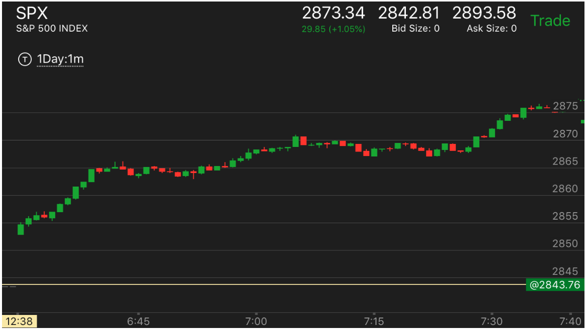
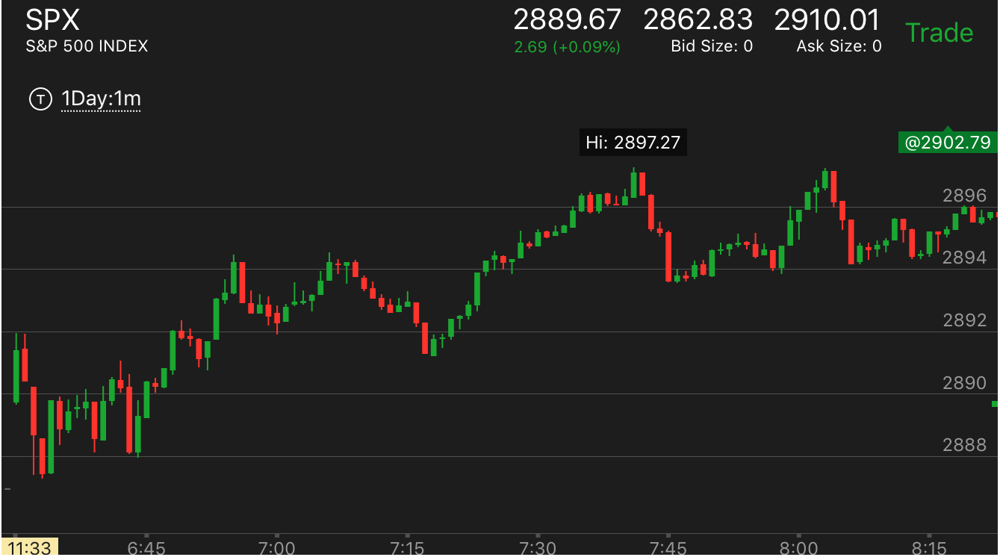
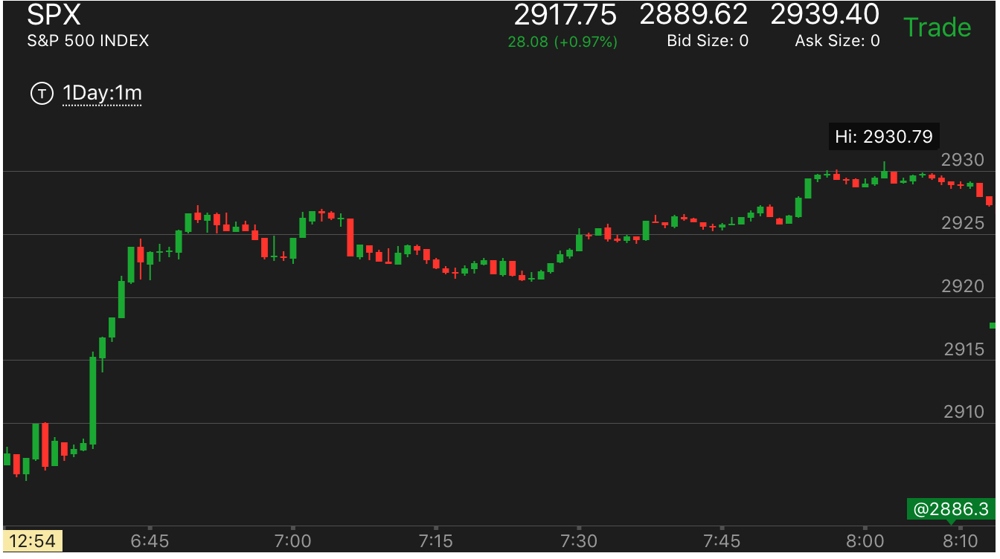

开盘前的期货市场和开盘一起建立走势
- 开盘后的走势，如果结合开盘前的走势，可能是一个走势的最后阶段，也可能是第一阶段。所以要仔细观察，到底是哪一阶段。不要有任何偏见。
- 如果在半夜的走势中出现了加速见底或者加速见顶的走势，那么开盘后，会把这个当作底部或顶部。
- 大盘大跌后，在底部走平4个小时以上，一直到开盘。或者大盘大涨后，在顶部走平4个小时以上，一直到开盘，可以做多/做空。除了这种情况。
不要提前做。而要等待开盘后的走势。曾经在半夜出现了5浪上涨，结果开盘后，仍然大涨。所以开盘前的走势不能作数。有时候可以限定一个范围。

图示：开盘后，大幅冲高，没有任何回调，继续走高。虽然可以从它走平的样子看出来，
但是它这样走高也是很奇怪的。但是如果结合开盘前的期货走势，就可以理解了。
它在开盘前，快速大幅突破，创新高。然后立刻拉回，速度更快，然后开始上涨。涨到开盘。这个说明它处于升势，
一定会超过前面的快速拉回的高点的。

图示：开盘后，下跌。出现了跌势。然后反弹。走平。似乎是一个跌势。但是如果看盘前走势的话。它
再开盘前，从2897附近跌下来。2897是个阻力点。所以这个走势变成了两可走势。应该等待它确实出现了低点再去做。
它大涨到了盘前走势的高点，才大跌。直到收盘前才到了这个低点附近。就这个走势本身而言。它也不一定是一个跌势。它其实是前面的跌势的最后阶段。
连续下跌三分钟。后面30分钟都在这个区域震荡。直到创新高后，也回到这个点的顶部。

图示：晚上的期指交易出现了5浪上涨。我以为开盘会跌。结果它大幅走低一分钟后，暴涨。所以说，半夜的期指走势不能说明问题。